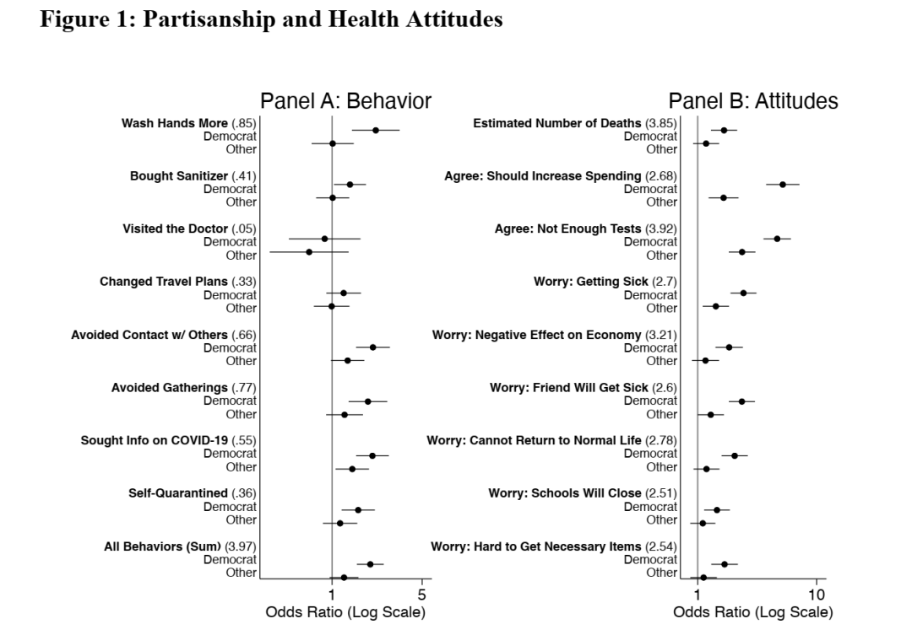
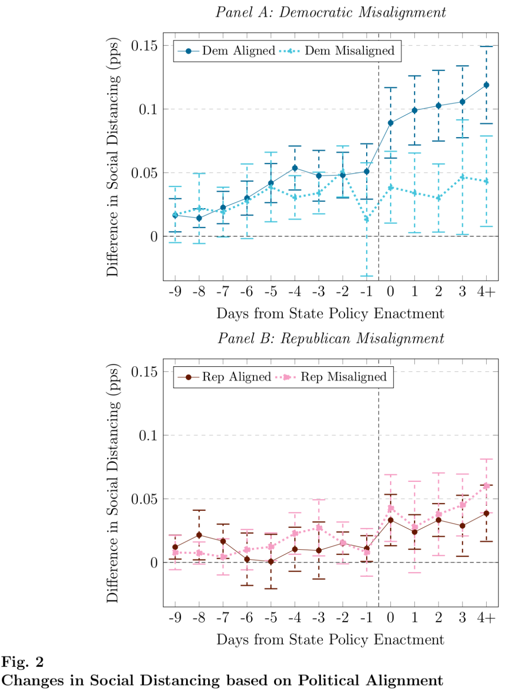
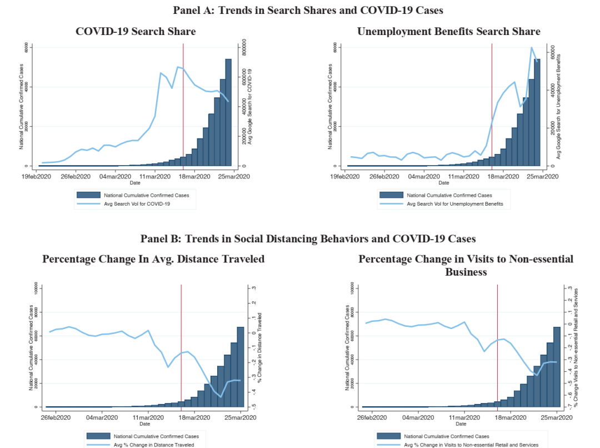

收录于合集
编者按： 新冠病毒是全人类、全社会的共同敌人。抗击疫情需要病毒学家去追根溯源，需要医生来治病救人，同时也离不开有关人类社会本身的科学研究与政治实践。那么，社会科学工作者会在疫情期间发现什么规律，又能为抗击疫情做出什么贡献？本期政观特别推荐3篇工作论文，带大家一起了解和探索疫情时期的政治心理学。
疫情早期的党派倾向、健康行为 与政策态度
2020年3月30日上线SSRN
来源： Kushner Gadarian, Shana and Goodman, Sara Wallace and Pepinsky, Thomas B., Partisanship, Health Behavior, and Policy Attitudes in the Early Stages of the COVID-19 Pandemic (March 27, 2020). Available at SSRN: https://ssrn.com/abstract=3562796 or http://dx.doi.org/10.2139/ssrn.3562796
作者： Kushner Gadarian，雪城大学政治学副教授；Sara Wallace Goodman，加州大学尔湾分校政治学系副教授；Thomas B. Pepinsky；康奈尔大学政府系教授。
摘要： 在新冠病毒流行期间，个体的选择决定了人类的命运。然而在美国，对于病毒的反应总是带有浓厚的政治色彩。总统和政府发出的精英信息很可能会引发民众的不同反应。本文作者在3月20日到23日对3000名美国公民进行了原创性的调查，进而收集了个体有关健康行为、态度和如何看待疫情防控的数据。 研究结果表明，由党派属性、投票倾向、意识形态立场等方面组成的政治分歧是预测个体健康行为最好的指标。 因此，公共卫生信息只有努力超越并弥合政治分歧，才能取得良好的社会效果。

**政治信念影响对社交距离规则的遵守
**
2020年4月6日上线SSRN
来源： Painter, Marcus and Qiu, Tian, Political Beliefs affect Compliance with COVID-19 Social Distancing Orders (April 8, 2020). Available at SSRN: https://ssrn.com/abstract=3569098 or http://dx.doi.org/10.2139/ssrn.3569098
作者： Marcus Painter，圣路易斯大学金融系助理教授；Tian Qiu，肯塔基大学金融与定量方法系博士研究生。
摘要： 社交距离对于减缓新冠病毒的传播至关重要。本文使用地理数据证明，政治信念会显著地制约州级层面社交距离规则的有效性。 相比于民主党执政的县域，共和党治下的居民更不愿意在家中禁足。 此外，相比于民主党州长，民主党人更不愿遵从共和党州长发布的命令。在控制了时间、地理、死亡病例和其他社交距离规则后，本文的结果仍然具有稳健性。因此，两党的合作和民众的支持对于缓解疫情至关重要。

**新冠时期政治视角下的风险感知
**
2020年4月9日上线SSRN
来源： Barrios, John Manuel and Hochberg, Yael V., Risk Perception Through the Lens of Politics in the Time of the COVID-19 Pandemic (April 6, 2020). University of Chicago, Becker Friedman Institute for Economics Working Paper No. 2020-32. Available at SSRN: https://ssrn.com/abstract=3568766 or http://dx.doi.org/10.2139/ssrn.3568766
作者： John Manuel Barrios，芝加哥大学商学院助理教授；Yael V. Hochberg，莱斯大学商学院教授，美国全国经济研究所研究员。
摘要： 即使客观上死亡的风险已经迫在眉睫，党派偏见仍然会左右人们对事实的看法。本文运用网络搜索数据，并从美国智能手机的大样本数据中采集了以县为单位的日均出行距离和不必要的商业活动次数。 数据表明，县域内特朗普的支持率越高，对新冠肺炎的感知就越低，采取限制居民活动的措施也就越少。 ****随着特朗普支持率的上升，病毒信息和失业福利的搜索热度开始下降，对于长途出行和非必要商业活动的限制也在减少。3月9日，媒体曝光保守党政治行动委员会会议受到疫情冲击，保守派议员也开始自我隔离，此后支持特朗普的地区才开始警觉起来。可见， 民众的风险感知并非基于潜在风险的变化，而是依赖于政治家对于风险的解读。 即使各州出台了关闭学校和非必要商业场所的禁令，上述偏见仍然存在。这一情况直到3月16日白宫出台相关指导手册才有所好转。本研究表明，党派倾向很可能在风险感知中发挥重要作用，进而对公共卫生产生重大的外部效应。政治观念使得自愿遵守的公共卫生建议大打折扣，或许只有政府采取强制措施才能拉平感染曲线。

编译：陆屹洲 审校：杨端程 编辑：康张城
【政文观止Poliview】系头条号签约作者